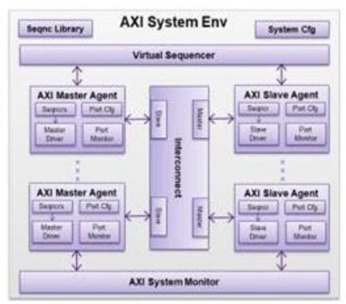
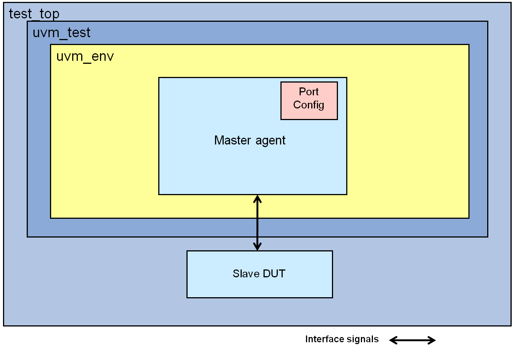
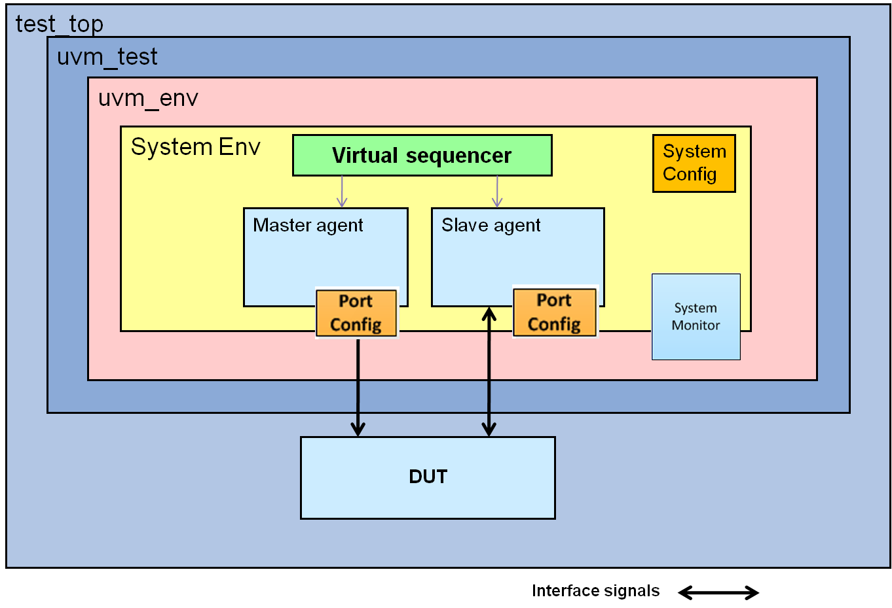

The following diagram shows the components of AXI architecture. This includes the AXI3, AXI4, ACE, and ACE5 protocols.

Master Agent
The Master Agent encapsulates Master Sequencer, Master Driver, and Port Monitor. The Master Agent can be configured to operate in active mode and passive mode. You can provide AXI sequences to the Master Sequencer.
The Master Agent is configured using a port configuration, which is available in the system configuration. The port configuration should be provided to the Master Agent in the build phase of the test.
Within the Master Agent, the Master Driver gets sequences from the Master Sequencer. The Master Driver then drives the AXI transactions on the AXI port. The Master Driver and port Monitor components within Master Agent call callback methods at various phases of execution of the AXI transaction. Details of callbacks are covered in later sections. After the AXI transaction on the bus is complete, the completed sequence item is provided to the analysis port of Port Monitor for use by the testbench.
Figure 3‑1 Usage With Standalone Master Agent

Slave Agent
The Slave Agent encapsulates Slave Sequencer, Slave Driver, and Port Monitor. The Slave Agent can be configured to operate in active mode and passive mode. You can provide AXI response sequences to the Slave Sequencer.
The Slave Agent is configured using port configuration, which is available in the system configuration. The port configuration should be provided to the Slave Agent in the build phase of the test or the testbench environment.
In the Slave Agent, the Port Monitor samples the AXI port signals. When a new transaction is detected, the Port Monitor provides a response request sequence item to the Slave Sequencer through port response_request_port. The slave response sequence within the sequencer programs the appropriate slave response. The updated response sequence item is then provided by the Slave Sequencer to the Slave Driver. The Slave Driver in turn drives the response on the AXI bus.
The slave driver expects the slave response sequence to,
• Return same handle of the slave response object as provided to the sequencer by the port monitor
• Return the slave response object in zero time, that is, without any delay after sequencer receives object from the port monitor
If any of the above conditions is violated, the slave agent issues a FATAL message.
The Slave Driver and Monitor call callback methods at various phases of execution of the AXI transaction. Details of callbacks are covered in later sections. After the AXI transaction on the bus is complete, the completed sequence item is provided to the analysis port for use by the testbench.
Figure 3‑2 Usage With Standalone Slave Agent
Stimulus Modeling
Stimulus Modeling at Master
The svt_axi_master_transaction is the basic master transaction description class, which depicts a transaction that has to be generated on the master interface. The class provides rich set of attributes such as address, burst type etc. The class contains transaction level attributes which can be directly mapped to interface signals (for example, addr, burst_type burst_lenth), transaction configuration attributes (for example, data_before_addr) and delay configurations on the master side (for example, addr_valid_delay, and bready_delay). The Master transaction constraint take into account the configuration set for the master agent while randomizing the class instances in order to ensure that attributes are within its configured bounds. Some of the commonly used master transaction class attributes are listed below.
xact_type: Specifies the transaction types as READ or WRITE
addr : Specifies the address for the transaction
burst_type: Specifies burst type as INCR/FIXED/WRAP
burst_size: Specifies maximum number of bytes to be transfered in each data transfer.
addr_valid_delay: Specifies the number of cycles AWVALID/ARVALID signal is delayed.
burst_length: Specifies the number of beats in the burst
data_before_addr: Indicates that data will start before address for write transactions
reference_event_for_addr_valid_delay : Specifies the reference event from which addr_valid_delay should begin.
For complete list of master transaction class attributes, see the class reference HTML document.
Master VIP Sequence Examples
Sample master sequence using some of the common attributes are given as follows. You can use 'svt_axi_master_base_sequence' base class to create their sequences.
Example 1: Master Directed Sequence
This sequence allows you to write directed test cases for specific scenarios. You have to explicitly specify all relevant master transaction attributes here as the transaction object is not randomized in this sequence.
class axi_master_directed_sequence extends svt_axi_master_base_sequence;
/** Parameter that controls the number of transactions that will be generated */
rand int unsigned sequence_length = 10;
/** Constrain the sequence length to a reasonable value */
constraint reasonable_sequence_length {
sequence_length <= 100;
}
/** UVM Object Utility macro */
`uvm_object_utils(axi_master_directed_sequence)
/** Class Constructor */
function new(string name="axi_master_directed_sequence");
super.new(name);
endfunction
virtual task body();
svt_axi_master_transaction write_tran, read_tran;
svt_configuration get_cfg;
bit status;
`uvm_info("body", "Entered ...", UVM_LOW)
super.body();
status = uvm_config_db #(int unsigned)::get(null, get_full_name(), "sequence_length", sequence_length);
`uvm_info("body", $sformatf("sequence_length is %0d as a result of %0s.", sequence_length, status ? "config DB" : "randomization"), UVM_LOW);
/** Obtain a handle to the port configuration */
/*
In case of directed sequence, port configuration handle need to obtain explicitly, whereas in case of random sequence this is done implicitly while randomizing the transaction class with uvm_do macro.
*/
p_sequencer.get_cfg(get_cfg);
if (!$cast(cfg, get_cfg)) begin
`uvm_fatal("body", "Unable to $cast the configuration to a svt_axi_port_configuration class");
Master agent has is_valid check, which checks the transaction programming against protocol specification. So, if transaction attributes are programmed incorrectly, then is_valid check will issue a UVM_WARNING indicating the issue and the test will fail with UVM_FATAL due to 'is_valid' check failure.
Example 1:
The following UVM_WARNING and UVM_FATAL are reported when the interface type is configured as AXI3 and the burst_length is 17 for an INCR burst as this is not allowed as per AXI3 protocol.
UVM_WARNING @ 1025000: reporter [is_valid] Invalid burst_length of 17 provided, must be inside { 1:16 } based on interface type(AXI3), xact_type(WRITE) and `SVT_AXI3_MAX_BURST_LENGTH(16)
This sequence randomizes the transaction class attributes as per the master transaction class constrains. You can specify inline constraints in the sequence if required. Remaining attributes will be assigned with applicable values as per the protocol constraints.
class axi_master_wr_rd_sequence extends svt_axi_master_base_sequence;
/** Parameter that controls the number of transactions that will be generated */
rand int unsigned sequence_length = 10;
/** Constrain the sequence length to a reasonable value */
constraint reasonable_sequence_length {
sequence_length <= 100;
}
/** UVM Object Utility macro */
`uvm_object_utils(axi_master_wr_rd_sequence)
/** Class Constructor */
function new(string name="axi_master_wr_rd_sequence");
super.new(name);
endfunction
virtual task body();
bit status;
`uvm_info("body", "Entered ...", UVM_LOW)
super.body();
status = uvm_config_db #(int unsigned)::get(null, get_full_name(), "sequence_length", sequence_length);
`uvm_info("body", $sformatf("sequence_length is %0d as a result of %0s.", sequence_length, status ? "config DB" : "randomization"), UVM_LOW);
repeat (sequence_length) begin
`uvm_do_with(req,
{
xact_type == svt_axi_transaction::WRITE;
data_before_addr == 0;
})
`uvm_do_with(req,
{
xact_type == svt_axi_transaction::READ;
data_before_addr == 0;
})
end
`uvm_info("body", "Exiting...", UVM_LOW)
endtask: body
endclass: axi_master_wr_rd_sequence
You can use object_id field of transaction for transaction tracking. This field is set by VIP for each transaction. Read transaction object_id start with 0 whereas as write transaction object_id start with 100000. object_id will be seen as OBJECT_NUM in VIP log messages as shown in the example. You can track status related information of a specific transaction using the object_id/OBJECT_NUM.
The class that describes slave transactions is 'svt_axi_slave_transaction'. Slave generates an object of svt_axi_slave_transaction when a command is received for which response has to be generated. The object defines complete transaction, that is, the command received along with the default response that Slave is configured to generate. Slave transaction class provides attributes to configure the slave response (for example, rresp[], bresp and data[]) and the delay applicable for the slave response (for example, bvalid_delay and addr_ready_delay). Example for slave transaction class attributes are
rresp[]: This is a dynamic array which configures slave read response for each beat
addr_ready_delay: Configures the delay on arready assertion.
enable_interleave: Enables/ Disables interleave
Interleave_pattern: Defines the pattern for interleaving
VIP allows you to specify distribution weights for delays with attributes. Attributes ZERO_DELAY_wt, SHORT_DELAY_wt and LONG_DELAY_wt defines the weight used to control distribution of zero delay, short delay and long delay respectively. Example for associated delay is ready signal assertion delay.
For usage details, see axi_slave_random_response_sequence sequence.
For complete list attributes and details, see the svt_axi_slave_transaction in class reference HTML.
The slave monitor of the AXI Slave agent contains a blocking peek port named response_request_imp which gets updated with any requests that target that slave. The slave agent connects this peek port to the slave sequencer which has a blocking peek port named response_request_port. Slave sequences must obtain a handle to the request through this port in the sequence, fill in the response information, and then submit this response to the driver through the normal means of sequencer/driver communication.
Slave VIP Example Sequences
This section demonstrates response generation with slave sequences. These slave sequences are extended from svt_axi_slave_base_sequence.
Example1: Random Response Sequence
This sequence generates random response from the slave. For write transactions, data is not written to the slave memory and for read, the response and data are random.
class axi_slave_random_response_sequence extends svt_axi_slave_base_sequence;
This sequence makes use of slave VIP memory. Data is written to and read back from the actual slave memory using the methods put_write_transaction_data_to_mem and get_read_data_from_mem_to_zltransaction respectively. These methods are defined in the parent sequence - svt_axi_slave_base_sequence.
class axi_slave_mem_response_sequence extends svt_axi_slave_base_sequence;
function new(string name="axi_slave_mem_response_sequence");
super.new(name);
endfunction
virtual task body();
integer status;
svt_configuration get_cfg;
`uvm_info("body", "Entered ...", UVM_LOW)
p_sequencer.get_cfg(get_cfg);
if (!$cast(cfg, get_cfg)) begin
`uvm_fatal("body", "Unable to $cast the configuration to a svt_axi_port_configuration class");
end
forever begin
/**
* Get the response request from the slave sequencer. The response request is
* provided to the slave sequencer by the slave port monitor, through
* TLM port.
*/
p_sequencer.response_request_port.peek(req_resp);
/**
* Randomize the response and delays
*/
status=req_resp.randomize with {
bresp == svt_axi_slave_transaction::OKAY;
foreach (rresp[index]) {
rresp[index] == svt_axi_slave_transaction::OKAY;
}
};
if(!status)
`uvm_fatal("body","Unable to randomize a response")
/**
* If write transaction, write data into slave built-in memory, else get
* data from slave built-in memory
*/
if(req_resp.xact_type == svt_axi_slave_transaction::WRITE) begin
put_write_transaction_data_to_mem(req_resp);
end
else begin
get_read_data_from_mem_to_transaction(req_resp);
end
$cast(req,req_resp);
/**
* send to driver
*/
`uvm_send(req)
end
`uvm_info("body", "Exiting...", UVM_LOW)
endtask: body
endclass: axi_slave_mem_response_sequence
The object_id and OBJECT_NUM can be used for slave transaction tracking also.
Interconnect VIP Transaction classes
Master and slave ports of interconnect VIP also uses transaction classes. The transaction class used by interconnect VIP slave ports is 'svt_axi_ic_slave_transaction' whereas master ports uses svt_axi_master_transaction class itself.
Overriding Master and Slave Transaction Classes
You can override master and slave transaction base classes from test or env class in the build_phase with custom classes with additional user constraints. Overriding can be done globally and locally using uvm methods 'set_type_override_by_type' and by 'set_inst_override_by_type' respectively. The following are the examples:
Example:
virtual function void build_phase (uvm_phase phase);
Master transaction and Slave response will not start until a reset is observed by Master and Slave respectively.
Setting Valid-Ready Delay Values for Master, Slave, and Interconnect
Three types of delays ZERO (0), SHORT (1:max-1) and LONG (max) are used by VIP for valid-ready delay, and they are applied as weighted constraints in VIP transactions using their respective ZERO_DELAY/SHORT_DELAY/LONG_DELAY_wt attributes. All such constraints can be found in HTML document with reasonable.*delay reg_exp search.
For example, the following are the two-step process on how you can set all delays to '0' value, leveraging VIP transaction provided attribute ZERO_DELAY_wt.
Step 1:
Create custom factory transactions for applicable VIP components in your testbench with ZERO_DELAY_wt=100
//Custom factory master transaction , applicable for master agent
AXI VIP provides slave memory represented by class svt_mem. Slave memory is instantiated in slave agent. In passive mode, the slave agent keeps the memory updated based on the observed data on the bus. This enables the system-level checks in the passive mode. In active mode, the slave memory is updated by the slave sequence.
See the slave sequence svt_axi_slave_base_sequence in file $DESIGNWARE_HOME/vip/svt/amba_svt/latest/axi_slave_agent_svt/sverilog/src/vcs/svt_axi_slave_ sequence_collection.svp. A reference to the slave memory instantiated in the slave agent is provided in the slave sequence. Using the API of this slave memory, you can read or write into the slave memory through this base sequence, or sequence extended from this base sequence.
For details on svt_mem and svt_axi_slave_base_sequence, see the AXI SVT class reference HTML documentation.
Slave Memory Modeling
AXI Slave Memory Modeling
The memory in AXI slave VIP is modeled using the class "svt_mem". Slave memory is instantiated in slave agent.
In passive mode, the slave agent keeps the memory updated based on the observed data on the bus. For write transactions, the memory is updated based on the observed write data. For read transactions, the memory is updated based on the read data. The configuration svt_axi_port_configuration::memory_update_for_read_xact_enable controls the vip behavior. The default value for this configuration is 1, so the memory will be updated for the read transactions it observes. This doesn't enable system check. At any RTL-to-RTL interface, if passive slave VIP is connected, then memory update from the observed traffic facilitate system level data integrity checks across such port.
Front Door Access
In active mode, the slave memory is updated by the slave sequence whenever it observes a transaction on the interface. In passive mode, the slave memory is updated by the monitor based on the observed write/read transactions on the interface. This is referred as front door access of slave memory. See the slave sequence svt_axi_slave_base_sequence in the file:
$DESIGNWARE_HOME/vip/svt/amba_svt/latest/axi_slave_agent_svt/sverilog/src/vcs/svt_axi_slave_ sequence_collection.svp. A reference to the slave memory instantiated in the slave agent is provided in the slave sequence. Using the API of this slave memory, you can read or write into the slave memory through this base sequence, or sequence extended from this base sequence.
For more details on svt_mem and svt_axi_slave_base_sequencet, see AXI SVT class reference HTML documentation. The usage of these APIs is shown in the axi_slave_mem_response_sequence that is part of the vip example.
Example:
The body() of a typical slave sequence looks like below:
virtual task body();
integer status;
svt_configuration get_cfg;
`uvm_info("body", "Entered ...", UVM_LOW)
p_sequencer.get_cfg(get_cfg);
if (!$cast(cfg, get_cfg)) begin
`uvm_fatal("body", "Unable to $cast the configuration to a svt_axi_port_configuration class");
end
// consumes responses sent by driver
sink_responses();
forever begin
/**
* Get the response request from the slave sequencer. The response request is
* provided to the slave sequencer by the slave port monitor, through
* TLM port.
*/
p_sequencer.response_request_port.peek(req_resp);
/**
* Randomize the response and delays
*/
status=req_resp.randomize with {
bresp == svt_axi_slave_transaction::OKAY;
foreach (rresp[index]) {
rresp[index] == svt_axi_slave_transaction::OKAY;
}
};
if(!status)
`uvm_fatal("body","Unable to randomize a response")
/**
* If write transaction, write data into slave built-in memory, else get
* data from slave built-in memory
*/
if(req_resp.xact_type == svt_axi_slave_transaction::WRITE) begin
put_write_transaction_data_to_mem(req_resp);
end
else begin
get_read_data_from_mem_to_transaction(req_resp);
end
$cast(req,req_resp);
/**
* send to driver
*/
`uvm_send(req)
end
`uvm_info("body", "Exiting...", UVM_LOW)
endtask: body
The memory is updated from the sequence in the following way:
if(req_resp.xact_type == svt_axi_slave_transaction::WRITE) begin
put_write_transaction_data_to_mem(req_resp);
end
else begin
get_read_data_from_mem_to_transaction(req_resp);
end
These APIs are part of the slave agent and can be copied over and modified as per the custom requirement. The code related to these APIs is not protected.
axi_slave_random_response_sequence shown in the vip example does not access the slave memory. The response and data is completely random.
Backdoor Access
The slave memory can also be accessed using the back door APIs (not through axi interface) from the testbench. The important APIs are:
read()
write()
set_meminit()
load_mem()
save_mem()
clear()
See the HTML doc for details. The following are some articles related to back door memory access:
While doing the backdoor access of memory using read() and write() methods, the number of bytes accesses will be equal to the data_width configured on the slave agent. For example, if the data_width is 32 bit (i.e., 4 bytes), then the address provided to these methods should be aligned to 4 bytes i.e., 0, 4, 8, 12 etc... If an unaligned (intermediate) address is provided, these methods internally align the address and then access the bytes in the memory.
The slave VIP has methods svt_axi_slave_agent::write_byte() and svt_axi_slave_agent::read_byte() that can be used to access a single byte of data in slave memory.
You can configure the memory to return some predefined values on the addresses that were not previously written. This can be achieve using the members:
meminit
set_meminit()
These take the enum values of type meminit_enum as inputs. It has the following values. Please see the html class reference doc for details:
UNKNOWNS
ZEROES
ONES
ADDRESS
VALUE
INCR
DECR
USER_PATTERN
Configuring Slave Memory Address Map
To configure the address ranges of slave memory, you need to use the method svt_axi_system_configuration::set_addr_range().
Example: set_addr_range(0, 32'h0000_0000, 32'h0000_ffff); //this will set the address range of slave[0].
It is possible to have discontinuous address ranges within a single slave vip. This can be done by calling the set_addr_range() multiple times, like:
set_addr_range(0, 32'h0000_0000, 32'h0000_ffff);
set_addr_range(0, 32'h0004_0000, 32'h0004_ffff);
set_addr_range(0, 32'h0006_0000, 32'h0006_ffff);
It is possible to have a shared memory across multiple slave vips. This can be achieved by creating an object of svt_mem in the testbench and setting this as slave memory for all the slave vips. This is demonstrated in the VIP example tb_amba_svt_uvm_basic_sys. Check the description of the member svt_axi_system_configuration::allow_slaves_with_overlapping_addr which has the details.
You can also specify rules for masters accessing shared memory through specific slave interfaces. Please check the article:
AXI interconnects follow certain rules to route the transactions from master to slave. These rules must be provided to VIP configuration, so that the VIP operates based on the interconnect behavior. The main aspects that needs to be considered are:
How does the interconnect route transactions from master to slave?
Will there be any transactions that gets terminated within interconnect (for example, interconnect register accesses)?
Does the interconnect translate the address? This means that the address seen on master will be different from the address seen on slave.
Does interconnect VIP behavior change dynamically during the simulation with respect to all the above aspects, based on the state of simulation?
For simple interconnect behaviors, where there is a fixed addr ranges for each slave and the routing of transactions is only based on the address and there is no address translation, then svt_axi_system_configuration::set_addr_range() can be used to configure the VIP with this information.
For complex interconnects, where the above described aspects need to be modeled dynamically, the complex memory map feature needs to be used.
VIP Components Impacted by this Feature:
Axi system monitor: data_integrity_check, master_slave_xact_data_integrity_check, slave_transaction_routing_check are the main checks impacted by this feature.
Axi interconnect vip: the behavior of interconnect vip wrt routing the transactions, addr translations are impacted by this feature.
Use Model:
1. Set svt_axi_system_configuration::enable_complex_memory_map=1;
2. In the configuration class extended from svt_axi_system_configuration, user needs to implement 2 functions:
virtual function bit get_dest_global_addr_from_master_addr(
input int master_idx,
input bit [`SVT_AXI_MAX_ADDR_WIDTH-1:0] master_addr,
output bit [`SVT_AXI_MAX_ADDR_WIDTH-1:0] global_addr,
input svt_axi_transaction xact);
This function needs to be implemented only if there is a requirement to perform a transformation of the master address to some global address. In many cases, this function need not be implemented. If not implemented, global address is same as the master address.
virtual function bit get_dest_slave_addr_from_global_addr(
input bit [`SVT_AXI_MAX_ADDR_WIDTH-1:0] global_addr,
output bit [`SVT_AXI_MAX_ADDR_WIDTH-1:0] slave_addr,
input svt_axi_transaction xact);
This function gets as input the global_addr computed from previous function (if previous function is not implemented, global_addr will be equal to master_addr), requester_name (uvm tb hierarchy of the master agent from which this xact originated), master transaction handle.
Based on these inputs, this function must compute the slave addr, the slave port id in that system where the xact will be routed to, whether the addr falls in register space. These are provided as output arguments. This function returns 1 only if it finds a slave port in this system where this master xact will be routed to. If not, this function returns 0 (indicates that the xact will not be routed to any of the slave in this system). If this is a register config xact (terminates within the interconnect), then is_register_addr_space output argument must be set to 1. The requester_name can also be set to an unique string using svt_axi_port_configuration::source_requester_name.
These two set of functions are executed by the AXI system monitor, interconnect VIP for every master transaction initiated in the system to get the slave transaction routing info and the slave address that will be seen. The description of each argument for these functions can be found in the HTML class reference document.
3. When the complex memory map feature is used, the svt_axi_system_configuration::set_addr_range() is not used to specify the addr map information.
Example implementation of the complex memory map API:
The following is an example, and must be implemented based on your DUT interconnect behavior.
function bit get_dest_slave_addr_from_global_addr (input bit [`SVT_AXI_MAX_ADDR_WIDTH-1:0] global_addr,
input bit [`SVT_AMBA_MEM_MODE_WIDTH-1:0] mem_mode = 0,
input string requester_name ="",
input bit ignore_unmapped_addr = 0,
output bit is_register_addr_space ,
output int slave_port_ids [$],
output bit [`SVT_AXI_MAX_ADDR_WIDTH-1:0] slave_addr ,
input svt_axi_transaction xact);
begin
//the transactions are always routed to slave port 0. The below statement indicates the routing info of interconnect.
slave_port_ids[0]=0;
//no addr translation. The below statement indicates any addr translation performed by interconnect.
slave_addr = global_addr; //note that global_addr will be tagged with the non-secure bit if address tagging is enabled.
//return 1
get_dest_slave_addr_from_global_addr=1;
//the below items can be used when applicable. In this example, they are not applicable
/*
* if(xact.port_cfg.port_id == 0 || xact.port_cfg.port_id == 1) begin //transactions from master[0] and master[1] will be routed to slave 0
slave_port_ids[0]=0;
end
else if(xact.port_cfg.port_id == 2 || xact.port_cfg.port_id == 3) begin //transactions from master[2] and master[3] will be routed to slave 1
slave_port_ids[0]=1;
end
//register transactions that terminates within the interconnect have to be specified using:
if(global_addr>=reg_space_start_addr && global_addr<=reg_space_end_addr) begin
is_register_addr_space=1;
slave_port_ids[0]=-1;
get_dest_slave_addr_from_global_addr=1;
end
*/
end
endfunction
This is also demonstrated in the VIP example tb_axi_svt_uvm_basic_sys
FIFO Memory
The slave agent has a FIFO memory that can be used for transactions of FIXED burst type. The FIFO memory is represented by class svt_axi_fifo_mem. FIFO memory is instantiated in the slave agent as follows:
svt_axi_fifo_mem fifo_mem[];
This FIFO is configured based on the port configuration parameters svt_axi_port_configuration::num_fifo_mem and svt_axi_port_configuration::fifo_mem_addresses[]. By default, svt_mem will be used for FIXED burst_type also.
Example configuration to create a single FIFO element is as follows:
The depth of the FIFO is infinite. The width of the FIFO is same as the data_width of the slave vip. These are not configurable.
The FIFO will be accessed by the slave memory sequence (svt_axi_slave_memory_sequence) only for the FIXED type bursts. You need to use the svt_axi_slave_memory_sequence to access the FIFO.
For more information on svt_axi_fifo_mem, see the AXI SVT class reference HTML documentation.
The below article shows how to customize the slave vip behavior for accessing the FIFO memory. It also has an example for accessing FIFO memory for INCR transactions of burst_length=1.
The axi system monitor data_integrity_checks are based on the slave memory updates. So you need to use the slave_mem_response_sequence on the active slave vips. A passive slave vip needs to be connected to the interfaces where there is a DUT. The memory in the passive slave vip will be updated based on the activity observed on the interface.
FIFO Memory
AXI VIP provides FIFO memory represented by class svt_axi_fifo_mem. FIFO memory is instantiated in the slave agent as follows:
svt_axi_fifo_mem fifo_mem[];
This FIFO is configured based on the port configuration parameters num_fifo_mem and fifo_mem_addresses.
Example configuration to create a single FIFO element is as follows:
The depth of the FIFO is infinite. The width of the FIFO is same as the data width of the interface. These are not configurable.
The FIFO will be accessed by the slave memory sequence (svt_axi_slave_memory_sequence) only for the FIXED type bursts. You need to use the svt_axi_slave_memory_sequence to access the FIFO.
For more information on svt_axi_fifo_mem, see the AXI SVT class reference HTML documentation.
Interconnect Env
The Interconnect Env routes the AXI transactions between multiple masters and slaves. The Interconnect Env contains configurable number of master and slave ports. The number of master and slave ports of the Interconnect Env can be controlled through interconnect configuration. The Interconnect Env routes the transactions from masters to slaves based on address map. Multiple address ranges can be specified for a single slave. The Interconnect Env can be configured to operate in active mode and passive mode.
In the Interconnect Env component, the ports which are connected to master components are referred to as Interconnect Slave ports and ports which are connected to slave components are referred to as Interconnect Master ports. More details on Interconnect master and slave ports are provided in the following sections.
The Interconnect VIP waits for the entire write data (from the master) to arrive before it initiates a transaction on the slave. The Interconnect VIP is a functionally ideal interconnect which comprises of several AXI masters and slaves. It is not designed to be the most efficient in terms of bandwidth utilization, performance and hence forth (which obviously an RTL is designed for). So for a write transaction, the Interconnect waits for the wlast to arrive before it starts sending the corresponding awvalid to the slave.
The master ports of the Interconnect Env drive the slave components in the system. The master ports within the interconnect Env are represented by Interconnect Master Agent class svt_axi_ic_master_agent. The Interconnect Master Agent is configured using a port configuration, which is available in the interconnect configuration.
The Driver within the Interconnect Master Agent drives the AXI transactions towards the slave component connected to the interconnect master port. The Driver and port Monitor components within Interconnect Master Agent call callback methods at various phases of execution of the AXI transaction. Details of callbacks are covered in later sections. At the end of each transaction on the Interconnect Master port, the port monitor within the Interconnect Master Agent provides the completed transaction object from its analysis port, in active and passive mode.
Interconnect Env Slave Ports
The slave ports of the interconnect Env are driven by the master components in the system. The slave ports within the interconnect Env are represented by Interconnect Slave Agent class svt_axi_ic_slave_agent. The Interconnect Slave Agent is configured using a port configuration, which is available in the interconnect configuration.
The Driver within the Interconnect Slave Agent responds to the AXI transactions driven by the master component connected to the interconnect slave port. The Driver and port Monitor components within Interconnect Slave Agent call callback methods at various phases of execution of the AXI transaction. Details of callbacks are covered in later sections. At the end of each transaction on the Interconnect Slave port, the port monitor within the Interconnect Slave Agent provides the completed transaction object from its analysis port, in active and passive mode.
Connecting Interconnect Env to the DUT
The number of master and slave ports of the Interconnect Env is configured using configuration members svt_axi_interconnect_configuration::num_ic_master_ports and svt_axi_interconnect_configuration::num_ic_slave_ports respectively. If the System Env also contains master and slave VIP components in addition to the Interconnect Env, these master and slave VIP components get automatically connected to the lowest port indices of the Interconnect Env. The number of master and slave VIP components in system Env is configured using configuration members svt_axi_system_configuration::num_masters and svt_axi_system_configuration::num_slaves respectively.
For example, if svt_axi_interconnect_configuration::num_ic_slave_ports = 3, and svt_axi_system_configuration::num_masters = 2, then master VIP components would automatically connect to slave port 0 and 1 of the Interconnect Env component. Slave port 2 of Interconnect Env can be connected to Master DUT. In such a case, the port monitor in Slave port 2 of the Interconnect Env will continue to carry out the passive functionality like protocol checking.
It is recommended to configure the number of master or slave VIP components in the System Env to match the number of slave or master ports of Interconnect Env. Then, for the Interconnect Env ports which are expected to be connected to the DUT, configure the corresponding Master or Slave VIP components in passive mode. That way, even if you replace Interconnect Env with Interconnect RTL, the passive monitors would continue to function.
For example, if Interconnect Env has 3 slave ports (port 0,1,2), and you need Master VIP components to drive port 0 and 1, and Master DUT to drive port 2.
In this case, configure the number of masters in System Env to 3 (svt_axi_system_configuration::num_masters = 3). Configure Master VIP 0 and Master VIP 1 as active, and Master VIP 2 as passive (as Master DUT would drive this port).
Configuration Consistency Checks
When the VIP is configured to use the interconnect model by setting the configuration parameter svt_axi_system_configuration::use_interconnect, the configuration of master or slave VIP components must match configuration of interconnect ports to which they connect. The VIP does a consistency check between the port configuration of master or slave VIP components and corresponding interconnect port configuration. The consistency checks ensure that:
VIP checks the consistency of below port configuration parameters between master or slave VIP components and corresponding Interconnect port configurations:
addr_width
addr_user_width
data_width
data_user_width
resp_user_width
snoop_data_width
wysiwyg_enable
use_separate_rd_wr_chan_id_width
id_width
read_chan_id_width
write_chan_id_width
num_outstanding_xact
num_read_outstanding_xact
num_write_outstanding_xact
num_outstanding_snoop_xact
exclusive_access_enable
barrier_enable
dvm_enable
max_num_exclusive_access
write_data_interleave_depth
serial_read_write_access
If consistency check fails, VIP issues the following message:
UVM_FATAL /…/svt_axi_system_env.svp(189) @ 0ns: uvm_test_top.env.axi_env [build_phase] Invalid configuration passed. Please pass a valid svt_axi_system_configuration object or derived object.
System Environment
The AXI System Env encapsulates the Master agents, Slave Agents, System Sequencer, Interconnect Env and the system configuration. The number of configured Master and Slave Agents is based on the system configuration provided by you. In the build phase, the System Env builds the Master agents, Slave agents and Interconnect Env. After the Master and Slave Agents are built, they are configured by System Env by using the port configuration information available in the system configuration.
Figure 3‑3 Usage With System Environment

System Sequencer
AXI System sequencer is a virtual sequencer with references to each Master and Slave Sequencers in the system. The System Sequencer is created in the build phase of the System Env. The system configuration is provided to the System Sequencer. The System Sequencer can be used to synchronize between the sequencers in Master and Slave Agents.
System Monitor
The System Monitor component is instantiated within the AXI System Env component. The System Monitor performs system-level checks across the master and slave ports within the system. The system monitor is enabled by setting the system configuration class member svt_axi_system_configuration::system_monitor_enable.
System Checks
The System checks supported by System Monitor fall under the following categories:
Checks for mapping between ACE coherent transaction and snoop transactions
Checks for sequencing between ACE coherent and snoop transactions
Checks for response to coherent transactions based on response to snoop transactions
Data integrity between ACE coherent transaction data and snoop transaction data
Data integrity checks for transactions that span across multiple cachelines such as READONCE and WRITEUNIQUE transactions
Data integrity between cache of all masters
Data integrity between cache of all masters and slave memory
Data Integrity across Interconnect master and slave ports
Transaction routing
There are certain checks which might be design specific. System Monitor provides hooks in the form of callbacks, which can be used by you to perform such design specific checks.
For the list of system checks and callbacks, see the AXI VIP Class reference HTML documentation.
Active and Passive Mode
Tables 3‑1 lists the behavior of Master and Slave Agents in active and passive modes.
Table 3‑1 Agents in Active and Passive Mode
Component behavior in active mode
Component behavior in passive mode
In active mode, Master and Slave components generate transactions on the signal interface.
In passive mode, master and slave components do not generate transactions on the signal interface. These components only sample the signal interface.
Master and Slave components continue to perform passive functionality of coverage and protocol checking. You can enable/disable this functionality through configuration.
Master and Slave components monitor the input and output signals, and perform passive functionality such as coverage and protocol checking. You can enable/disable this functionality through configuration options.
The Port Monitor within the component performs protocol checks only on sampled signals. That is, it does not perform checks on the signals that are driven by the agent. This is because when the agent is driving an exception (exceptions are not supported in this release) the Monitor should not flag an error, since it knows that it is driving an exception. Exception means error injection.
The port monitor within the component performs protocol checks on all signals. In passive mode, signals are considered as input signals.
The delay values reported in the AXI transaction provided by the Master and Slave component, are the values provided by you, and not the sampled delay values.
The delay values reported in the AXI transaction provided by the Master and Slave Agent, are the sampled delay values on the bus.
Interconnect component routes transactions from masters to slaves.
Interconnect component does not route the transactions from masters to slaves.
Interconnect component continues to perform passive functionality of coverage and protocol checking on all the master and slave ports. You can enable/disable this functionality through configuration.
Interconnect component monitors the input and output signals on all the master and slave ports, and performs passive functionality of coverage and protocol checking. You can enable/disable this functionality through configuration.